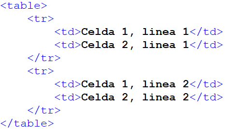
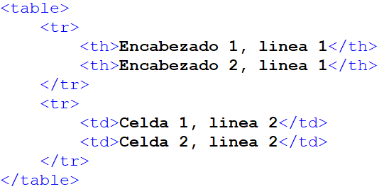

Tablas en HTML
Una tabla es un conjunto de celdas dentro de las cuales podemos incorporar contenidos.
HTML dispone de una gran variedad de etiquetas para crear tablas, con sus atributos, de las cuales veremos una introducción en este artículo.
En general, se utilizan para representar información tabulada, en filas y columnas. Esto es una realidad en los últimos años, desde que las tablas se han descartado para fines relacionados con la maquetación.
Nota: durante un tiempo, gran parte de los diseñadores de páginas basaron su maquetación en este tipo de artilugios. En efecto, una tabla nos permite organizar y distribuir los espacios de la manera más adecuada. Nos puede ayudar a generar texto en columnas como los periódicos, prefijar los tamaños ocupados por distintas secciones de la página o poner de una manera sencilla un pie de foto a una imagen.
Hablar hoy de tablas como solución para la maquetación ha pasado a la historia. Las webs actuales han acabado con técnicas que incrementan el tamaño del código fuente de las páginas web, mezclando presentación y contenido. Actualmente toda la maquetación de una página se organiza con CSS, lo que nos da un mayor control de todos los elementos de la página y la posibilidad de separar todos los estilos para definir el aspecto de una web en un fichero aparte del HTML.
Por ello, las tablas actualmente se utilizan mucho menos que en el pasado y realmente la recomendación es usarlas solo en los casos en los que necesitemos incluir en una página información tabulada, es decir, dispuesta en filas y columnas. Todo uso basado en tablas para procurar colocar elementos en determinadas posiciones de la página sería incorrecto en las técnicas actuales de diseño de páginas web.
Como veremos, existen diversas etiquetas que se deben utilizar en una forma determinada para la creación de tablas. Por ello, puede que en un principio nos resulte un poco complicado trabajar con estas estructuras. Si deseamos mostrar datos de una manera sencilla de leer, dispuestos en filas y columnas, tarde o temprano observaremos que las tablas son una rápida solución y vamos a apreciar las posibilidades que nos ofrecen. Por otro lado, las tablas han dejado de utilizarse debido a su falta de correlación con el desarrollo Responsive, entre otras características.
Etiquetas básicas para tablas en HTML
Las tablas son definidas por las etiquetas TABLE y su cierre.
Dentro de estas dos etiquetas colocaremos todas las otras etiquetas de las tablas, hasta llegar a las celdas. Dentro de las celdas ya es permitido colocar textos e imágenes que darán el contenido a la tabla.
Las tablas son descritas por líneas de arriba a abajo (y luego por columnas de izquierda a derecha). Cada una de estas líneas, llamada fila, es definida por otra etiqueta y su cierre: TR (Table Register).
Asimismo, dentro de cada línea, habrá diferentes celdas. Cada una de estas celdas será definida por otra etiqueta: TD (Table Data). Dentro de ésta y su cierre será donde coloquemos nuestro contenido, el contenido de cada celda.
Ejemplo de estructura de tabla:

El resultado:
| Celda 1, linea 1 | Celda 2, linea 2 |
| Celda 1, linea 2 | Celda 2, linea 2 |
También es parte de una tabla la etiqueta TH (Table Header), que sirve para crear una celda cuyo contenido posea un título o cabecera de la tabla.
Ejemplo:

Atributos para tablas, filas y celdas
A partir de esta idea simple y sencilla, las tablas adquieren otra magnitud cuando les incorporamos toda una lista de atributos aplicados sobre cada tipo de etiquetas que las componen.
- cellspacing: es el espacio entre celdas de la tabla.
- cellpadding: es el espacio entre el borde de la celda y su contenido.
- border: es el número de píxeles que tendrá el borde de la tabla.
- bordercolor: es el color a asignar al borde de la tabla.
Podemos usar prácticamente cualquier tipo de etiqueta dentro de la etiqueta TD para, de esta forma, escribir su contenido.
Las etiquetas situadas en el interior de la celda no modifican el resto del documento.
Las etiquetas de fuera de la celda no son tenidas en cuenta por ésta.
Podemos especificar el formato de nuestras celdas a partir de etiquetas introducidas en su interior o mediante atributos colocados dentro de la etiqueta de celda TD o bien, dentro de la etiqueta TR, si deseamos que el atributo sea válido para toda la línea.
La forma más útil y actual de dar forma a las celdas es a partir de CSS que veremos más adelante.
A continuación algunos atributos útiles para la construcción de nuestras tablas:
- align: Justifica el texto de la celda del mismo modo que si fuese el de un párrafo.
- valign: Podemos elegir si queremos que el texto aparezca arriba (top), en el centro (middle) o abajo (bottom) de la celda.
- bgcolor: Da color a la celda o línea elegida.
- bordercolor: Define el color del borde.
- background: Nos permite colocar un fondo para la celda a partir de un enlace a una imagen.
- height: Define la altura de la celda en pixels o porcentaje.
- width: Define la anchura de la celda en pixels o porcentaje.
- colspan: Expande una celda horizontalmente.
- rowspan: Expande una celda verticalmente.
Es de destacar que si definimos una celda de un ancho 100 por ejemplo, y colocamos en la celda un contenido como una imagen que mida más de 100 pixeles, la celda crecerá en horizontal todo lo necesario para que la imagen quepa. Si el elemento, aunque más ancho, fuera divisible (como un texto) el ancho sería respetado y el texto crecería hacia abajo o lo que es lo mismo, en altura, como señalamos en el anterior párrafo.
Ejemplo:
<td width= "70">
Define un ancho de 70 pixels a la celda. Sin embargo,
<td width= "70%">
define un ancho a la celda del 80% de la anchura del total de la tabla.
Los atributos rowspan y colspan son también utilizados frecuentemente. Gracias a ellos es posible expandir celdas fusionando éstas con sus vecinas. El valor que pueden tomar estas etiquetas es numérico. El número representa la cantidad de celdas fusionadas.
Así:
<td colspan= "2">
Fusiona la celda en cuestión con su vecina derecha.
Del mismo modo,
<td rowspan= "2">
Expandirá la celda hacia abajo fusionándose con la celda inferior.
No debes maquetar con tablas
En HTML (antes utilizar CSS) se utilizaban las tablas para maquetar páginas.
Con maquetar nos referimos al proceso por el cual se posicionan contenidos en la pantalla atendiendo a una estructura. Este proceso se conoce como maquetación y a la estructura muchas veces se la conoce como layout.
Con las tablas podemos generar una serie de columnas, espacios como cabecera o pie donde podemos mostrar contenidos estructurados que den la sensación de un diseño bien realizado, dividido en columnas y filas, como la maquetación de una revista o un portal. Sin embargo, usar las tablas NO es una práctica recomendada.
Esta sección sirve para estudiar cómo se hacían las cosas antes y para practicar con HTML, pero hoy ya no se utiliza este tipo de técnicas excepto para los casos ya mencionados.
Actualmente se usa el lenguaje CSS y sus múltiples herramientas para producir un contenido correctamente maquetado.
Fuente: Curso Fullstack Phyton del programa Codo a Codo